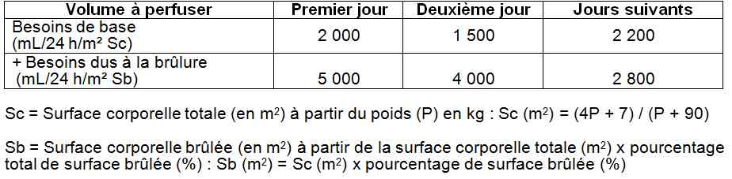

Bienvenue Sur Medical Education
Brûlures de l'enfant
EnfantSpécialité : pediatrie / traumatologie /
Points importants
-
Estimer la gravité de la brûlure sur le pourcentage total de la surface brûlée, sa profondeur et sa localisation afin de trier les enfants entre ceux qui peuvent être gérés en ambulatoire et aux urgences, de ceux qui relèvent d’un service de chirurgie pédiatrique et de ceux qui nécessitent le transfert dans un Centre de Brûlés pour enfants.
-
Les brûlures de l’enfant réclament une prise en charge urgente :
-
d’abord médicale, centrée sur l’hémodynamique et la douleur
-
ensuite chirurgicale, centrée sur la prévention de l’infection et la cicatrisation
Présentation clinique / CIMU
SIGNES FONCTIONNELS
- d’abord médicale, centrée sur l’hémodynamique et la douleur
-
ensuite chirurgicale, centrée sur la prévention de l’infection et la cicatrisation
Présentation clinique / CIMU
SIGNES FONCTIONNELS
Généraux
-
En cas de brûlures étendues :
- tachycardie
- polypnée
- temps de recoloration périphérique > 3s
- obnubilation ou agitation paradoxale
Spécifiques
-
Cutanés :
- douleur vive qui se traduit chez l’enfant par des pleurs ou des hurlements immédiats
- rougeur, chaleur, œdème, phlyctènes, voir nécrose au niveau de la partie brûlée (apparition progressive)
CONTEXTE
Terrain
-
Nourrisson (brûlure grave dès 10 % de surface corporelle brûlée)
- insuffisance rénale, cardiaque et respiratoire : aggravent les problèmes immédiats en cas de choc hypovolémique.
- diabète et immunodépression : surinfections et retard de cicatrisation
Antécédents
- Accidents domestiques antérieures pouvant orienter vers une maltraitance
- Existence d'une insuffisance chronique (cardiaque respiratoire ou rénale) ou d'une pathologie grave préexistante
Facteurs de risque
- Surface brûlée étendue
- La face ou le cou : risque d'asphyxie
- Les organes génitaux externes : risque septique, possibilité d'obstruction des voies urinaires nécessitant la mise en place d'une sonde urinaire
- Les zones périarticulaires : risque d'apparition de cicatrices rétractiles dans les plis de flexion
- Les extrémités : risque d'atteinte fonctionnelle
Circonstances de survenue
- Vérifier qu’il s’agit bien d’un accident domestique, et non pas d’une négligence ou d’une maltraitance
-
La brûlure peut être :
- étendue et de profondeur limitée (renversement de liquides bouillants)
- ou au contraire limitée mais profonde (doigts posés sur la porte d'un four ou d'une plaque électrique)
-
Cas particuliers :
- des brûlures électriques (doigts dans une prise, cordon électrique défectueux)
- des brûlures d’incendie par feux d’appartement avec possibilité d’intoxication cyanhydrique ou oxycarbonée associée et d’inhalation de suies et de fumées
EXAMEN CLINIQUE
- Constantes vitales (notamment hémodynamiques et respiratoires + poids)
Evaluer la surface brûlée (tables de Lund et Browder)
_744 Tableau Tables de Lund et Browder
Evaluer la profondeur de la brûlure
-
Grade I :
- la brûlure est superficielle et ne touche que la couche cornée l'épiderme
- simple érythème qui guérit en 4 jours
-
Grade II :
- il existe des phlyctènes
- la brûlure peut être superficielle ou profonde touchant les cellules basales. Il est impossible de faire la différence entre les deux précocement
-
Grade III :
- la peau est carbonisée ou blanchâtre, et insensible
- toutes les couches de la peau sont atteintes
- différents degrés peuvent coexister
EXAMENS PARACLINIQUES SIMPLES
- Scope (FC, PA, FR, SpO2)
- Température
- Diurèse (> 1-2mL/kg/h)
- EVA ou échelle des visages ou échelles d’hétéro-évaluation chez les enfants < 4 ans
CIMU
Tri 1 -5 (selon surface et profondeur de surface brûlée et atteintes associées)
Signes paracliniques
BIOLOGIQUES (uniquement en cas d’hospitalisation)
-
Groupe sanguin + RAI
-
NFS + plaquettes et Hémostase
-
Ionogramme sanguin + albuminémie + gaz du sang et/ou lactatémie (si choc)
IMAGERIE
-
Uniquement en cas d’hospitalisation
Radio de thorax
- Œdème lésionnel
- Index cardiothoracique
Diagnostic étiologique
-
Brûlures par contact de liquides chauds (très fréquentes chez le petit enfant)
-
Brûlures par ingestion de liquides chauds (biberon chauffé au micro-ondes)
-
Brûlures au cours d’un incendie :
-
le risque immédiat tient à l'intoxication cyanhydrique ou oxycarbonée
-
le risque plus tardif à l'inhalation de suies et de fumées
-
Brûlures électriques :
-
le risque immédiat est cardiaque, rénal et neurologique.
-
Brûlures chimiques :
-
action caustique d'un acide fort ou d’une base forte
-
Brûlures par radiation ionisante (les moins fréquentes en pédiatrie)
Traitement
TRAITEMENT PREHOSPITALIER / INTRAHOSPITALIER
- le risque immédiat tient à l'intoxication cyanhydrique ou oxycarbonée
- le risque plus tardif à l'inhalation de suies et de fumées
- le risque immédiat est cardiaque, rénal et neurologique.
- action caustique d'un acide fort ou d’une base forte
Traitement
TRAITEMENT PREHOSPITALIER / INTRAHOSPITALIER
Stabilisation initiale
- Retirer les vêtements des zones brûlées (prévention de l’hypothermie)
- Nettoyage à l’eau tiède savonneuse (ne pas effondrer les phlyctènes), rincer et sécher
- Déterminer où l’enfant doit être hospitalisé (voir critères d’admission)
Suivi du traitement
-
Si retour à domicile ou brûlures localisées des extrémités :
-
réaliser un pansement occlusif :
- appliquer la Flammazine® en couche épaisse
- couvrir avec Jelonet® et compresses stériles et maintenir avec une bande Velpeau®
- autre possibilité : pansements tissés pré-enduits de sulfadiazine argentique (Urgotul SAg® )
-
ordonnance d’antalgiques :
- paracétamol
- codéine
-
réaliser un pansement occlusif :
-
Si indication d’hospitalisation :
-
compensation hydro-électrolytique :
- déterminer la Surface corporelle totale (Sc) en m2 à partir du poids (P) en kg :Sc (m2) = (4P + 7) / (P + 90)
- déterminer la Surface corporelle brûlée (Sb) en m2 à partir de la surface corporelle totale (m2) x par le pourcentage total de surface brûlée (%)Sb (m2) = Sc (m2) x pourcentage de surface brûlée (%)
- établir une voie veineuse rapidement
- 2 voies veineuses périphériques : < 2 ans : 24G ; 2-5 ans : 22G ; 5-10 ans : 20G ; > 10 ans : 18G
- en cas de difficultés (état de choc, membres brûlés) : cathétérisme veineux central, notamment fémoral ou pose d’une voie intra-osseuse
- prélever le bilan biologique
-
volumes à perfuser (formule de Carvajal)
-  _745 Tableau Volumes à perfuser (formule de Carvajal)
- la moitié des apports du 1er jour est à apporter dans les 8 premières heures post-brûlure. La formule de Carvajal ne prévoit pas de plafonnement des volumes perfusés. Le débit de la perfusion est ensuite à adapter aux paramètres hémodynamiques (FC, PA, SpO2) et surtout à la diurèse qui doit être > 1mL/kg/h (poser une poche urinaire si le périnée est intact, sinon envisager la pose d’une sonde urinaire)
-
solutés à employer :
- initialement Ringer-Lactate
- secondairement, apport glucidique (besoins glucidiques ~10-12 g/kg/24h)
- soit en modulant Ringer-Lactate et G5% en Y (½- ½ ou ¾ - ¼)
- soit en utilisant le B26 ou polyionique G5 (G5% + 4 g/L NaCl + 2g/L KCl)
- l’albumine n’est utilisée qu’après la 8ème heure
-
prise en charge de la douleur :
- morphine toutes les 4h à titre systématique
- prévention de la constipation : lactulose
- paracétamol à titre systématique
- AINS à titre systématique
- si l’enfant est insuffisamment soulagé, morphine IV (le cas échéant, PCA)
-
alimentation hypercalorique et hyperprotidique :
-
les besoins nutritionnels du brûlé sont estimés par la formule suivante :
- besoins caloriques (Kcal/24h) = 2000 Kcal/m2 Sc/24h + 2.800 Kcal/m2 Sb/24h
-
les besoins nutritionnels du brûlé sont estimés par la formule suivante :
-
soins locaux :
- ne pas faire de pansements occlusifs aux Urgences (++)
-
mais un protocole « Trousseau » de séchage à l’air :
- affaisser les phlyctènes dans le chariot douche, sous MEOPA ± Hypnovel® si > 6 mois (0,4 mg/kg en IR, 15 min. avant les soins, sans dépasser 10 mg
- laisser la brûlure à l’air
- vaporiser de la Chlorhexidine aqueuse toutes les 2 heures, idéalement 30 à 45 min après la prise de morphine et 2 heures après
- positionner l’enfant sous la lampe de manière à ce qu’il n’y ait pas de frottement sur les zones brûlées
- si un pli de flexion est atteint, immobiliser l’articulation en position de fonction afin qu’il n’y ait pas de cicatrice rétractile
- sécher la brûlure au sèche-cheveux, température FROIDE vérifiée, pendant 10 min minimum
- doucher l’enfant tous les jours dans le chariot douche et laver la brûlure à l’Hibiscrub®
-
installation posturale
- _746 Tableau Installation posturale
-
compensation hydro-électrolytique :
MEDICAMENTS
- Paracétamol 15 mg/kg/4-6h (maximum 60mg/kg/j ou 4g/j chez le grand enfant)
- Codenfan® 1 mg/kg/6h (maximum 4mg/kg/24h)
-
AINS :
- enfant < 20 kg : Nifluril® suppo 40 mg, 40 mg/kg/j soit un suppo/10kg en 2 à 3 prises par voie rectale
- enfant > 20 kg : Surgam® cp à 100 mg, 10mg/kg/j soit 1cp/10kg en 2 à 3 prises par voie orale
-
Morphine per os : Oramorph® (solution 1 mL = 2 mg – peut être mélangé à une boisson sucrée) 0,2 mg/kg = 0,1 mL/kg 6 fois/j
-
prévention de la constipation :
- enfant < 20 kg : Lansoyl® 1 pot/10 kg en 2 prises
- enfant > 20 kg : Importal® 2 sachets/j
-
morphine IV :
- charge : 0,05-0,1 mg/kg
- titration : 0,025 mg/kg toutes les 5 min jusqu’à soulagement (EVA < 3/10)
- entretien : 0,040 mg/kg/h
- bolus si nécessaire : 0,025 mg/kg
- période réfractaire : 7 min
- réversion : naloxone (Narcan®) 10µg/kg IV
-
prévention de la constipation :
Surveillance
CLINIQUE
-
Douleur (toutes les heures initialement, ensuite /3heures)
-
Inflammation locale (sécrétions, œdème)
-
T°, FC, FR, SpO2, PA/3h (ou scope si brûlures sévères/étendues)
PARACLINIQUE
-
Ionogramme sanguin + albuminémie + NFS-hémostase +/- bilan infectieux (selon l’état clinique)
Devenir / orientation
CRITERES D’ADMISSION
Devenir / orientation
CRITERES D’ADMISSION
En service de chirurgie pédiatrique et plastique (les grades II étendus)
- > 5% chez le nourrisson (0-2 ans)
- > 10% chez l’enfant
-
Certaines localisations dangereuses :
- brûlures étendues et profondes des mains
- plis de flexion (risque de brides rétractiles)
- brûlures circonférentielles des membres (risque d’ischémie distale)
- face (bilan ophtalmologique systématique) et cou
- siège et organes génitaux externe (sondage temporaire uniquement en cas de dysurie importante)
- péri-orificielle (surveillance des rétractions)
- Brûlures électriques (contrôler ECG et ionogramme sanguin), chimiques
- Contexte d’incendie avec dégagement de fumées (risques d’intoxication au CO ou au cyanure, risque d’inhalation de suies obstructives dans l’arbre trachéo-bronchique nécessitant une fibro-aspiration précoce), notion de blast dans les brûlures après explosion (radio pulmonaire systématique)
- Contexte social défavorisé ou doute sur des sévices à enfant
Dans un centre de Brûlés pour enfants ou en Réanimation pédiatrique
- > 10% chez le nourrisson (0-2 ans)
- > 25% chez l’enfant
- Brûlures de la face
CRITERES DE SORTIE
- Etat clinique stable
- Douleur pouvant être gérée au domicile avec paracétamol ou codéine
- Parents fiables (surveillance de la lésion, rendez-vous de suivi)
ORDONNANCE DE SORTIE
- Paracétamol 15 mg/kg/4-6h (maximum 60 mg/kg/j ou 4 g/j chez le grand enfant)
- Codenfan® 1 mg/kg/6h (maximum 4 mg/kg/24h)
- Soins de massages après cicatrisation à l'aide d'une pommade de type Biafine®
- Changer le pansement quotidiennement
- Retirer les phlyctènes dès J2-J3
Mécanisme / description
-
Les brûlures sont des destructions cellulaires de la peau et des structures sous-jacentes
-
Il existe différents types de brûlures : les brûlures thermiques, les brûlures électriques, les brûlures chimiques et les brûlures par radiation . Elles peuvent être superficielles, intermédiaires, ou plus profondes et avoir une localisation généralisée ou particulière (cou, face, yeux, mains, pieds, articulations...). Les accidents domestiques sont en cause dans la majorité des cas chez l’enfant. Il y a un retentissement local qui aboutit à une cicatrisation, mais aussi un possible retentissement général :
-
choc hypovolémique
-
exsudation plasmatique au niveau des plaies et œdème interstitiel
-
risques d'infection liée à une contamination
-
risques de dénutrition due à l'hypermétabolisme
-
autres complications :
-
rénales (insuffisance fonctionnelle et organique)
-
digestives (ulcère de stress, hémorragie...)
-
thrombo-emboliques (phlébite, embolie pulmonaire)
-
neurologiques (troubles de la conscience et du comportement, coma)
-
risque de complications tardives : cutanées, articulaires ou tendineuses peuvent perturber la vie sociale de l’enfant brûlé
Bibliographie
-
Carvajal HF: Resuscitation of the burned child. In: Carvajal HF, Parks DH, eds. Burns in children. Chicago 1988 Year Book Medical Publishers
-
Hildreth M, Carvajal HF. Caloric requirements in burned children. A simple formula to estimate daily caloric requirements. J Burn Care Rehab 1980; 3:78.
-
Hansbrough JF, Hansbrough W. Pediatric burns. Pediatr Rev 1999; 20:117-23.
-
Henry DB, Foster RL. Burn pain management in children. Pediatr Clin N Am 2000; 47:681-98.
-
Stoddard FJ. Treatment of pain in cutely burned children. J Burn Care Rehab 2002; 23:135.
-
Kaye ET. Topical antibacterial agents. Infect Dis Clin N Am 2000; 14:321-39.
- choc hypovolémique
- exsudation plasmatique au niveau des plaies et œdème interstitiel
- risques d'infection liée à une contamination
- risques de dénutrition due à l'hypermétabolisme
-
autres complications :
- rénales (insuffisance fonctionnelle et organique)
- digestives (ulcère de stress, hémorragie...)
- thrombo-emboliques (phlébite, embolie pulmonaire)
- neurologiques (troubles de la conscience et du comportement, coma)
- risque de complications tardives : cutanées, articulaires ou tendineuses peuvent perturber la vie sociale de l’enfant brûlé
Bibliographie
- Carvajal HF: Resuscitation of the burned child. In: Carvajal HF, Parks DH, eds. Burns in children. Chicago 1988 Year Book Medical Publishers
- Hildreth M, Carvajal HF. Caloric requirements in burned children. A simple formula to estimate daily caloric requirements. J Burn Care Rehab 1980; 3:78.
- Hansbrough JF, Hansbrough W. Pediatric burns. Pediatr Rev 1999; 20:117-23.
- Henry DB, Foster RL. Burn pain management in children. Pediatr Clin N Am 2000; 47:681-98.
- Stoddard FJ. Treatment of pain in cutely burned children. J Burn Care Rehab 2002; 23:135.
- Kaye ET. Topical antibacterial agents. Infect Dis Clin N Am 2000; 14:321-39.
Auteur(s) : Jean-Christophe MERCIER, Olivier GALL, Franck FITOUSSI